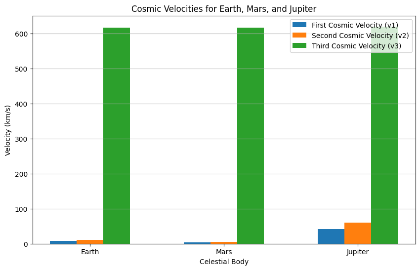

Problem 2
Problem 2: Escape Velocities and Cosmic Velocities
Motivation
Escape velocity is the minimum speed required for an object to break free from a celestial body's gravitational influence without further propulsion. The concept extends to cosmic velocities, which define thresholds for orbiting, escaping, and leaving a star system. These velocities are foundational for space exploration, enabling satellite launches, interplanetary missions, and even interstellar travel.
Definitions and Physical Meaning
- First Cosmic Velocity (Orbital Velocity):
- The minimum speed required for an object to achieve a stable circular orbit around a celestial body.
-
Formula: $$ v_1 = \sqrt{\frac{GM}{r}} $$ Where:
- \(G\) is the gravitational constant,
- \(M\) is the mass of the celestial body,
- \(r\) is the distance from the center of the body to the object.
-
Second Cosmic Velocity (Escape Velocity):
- The minimum speed required for an object to escape the gravitational pull of a celestial body.
-
Formula: $$ v_2 = \sqrt{\frac{2GM}{r}} $$ This is \(\sqrt{2}\) times the first cosmic velocity.
-
Third Cosmic Velocity (Interstellar Escape Velocity):
- The minimum speed required for an object to escape the gravitational influence of a star system (e.g., the Solar System).
- Formula: $$ v_3 = \sqrt{v_2^2 + v_{\text{esc, star}}^2} $$ Where \(v_{\text{esc, star}}\) is the escape velocity from the star's gravitational field at the object's location.
Mathematical Derivation and Parameters
First Cosmic Velocity
Derived from the balance between centripetal force and gravitational force: $$ \frac{mv_1^2}{r} = \frac{GMm}{r^2} $$ Solving for \(v_1\): $$ v_1 = \sqrt{\frac{GM}{r}} $$
Second Cosmic Velocity
Derived from the conservation of energy. An object must have enough kinetic energy to overcome the gravitational potential energy: $$ \frac{1}{2}mv_2^2 = \frac{GMm}{r} $$ Solving for \(v_2\): $$ v_2 = \sqrt{\frac{2GM}{r}} $$
Third Cosmic Velocity
Combines the escape velocity from the planet and the star system: $$ v_3 = \sqrt{v_2^2 + v_{\text{esc, star}}^2} $$
Python Implementation
Below is a Python script to calculate and visualize the first, second, and third cosmic velocities for Earth, Mars, and Jupiter.
import numpy as np
import matplotlib.pyplot as plt
# Constants
G = 6.67430e-11 # Gravitational constant (N m^2/kg^2)
# Celestial body data (mass in kg, radius in meters)
bodies = {
"Earth": {"mass": 5.972e24, "radius": 6.371e6},
"Mars": {"mass": 6.417e23, "radius": 3.389e6},
"Jupiter": {"mass": 1.898e27, "radius": 6.9911e7}
}
# Function to calculate first cosmic velocity
def first_cosmic_velocity(mass, radius):
return np.sqrt(G * mass / radius)
# Function to calculate second cosmic velocity
def second_cosmic_velocity(mass, radius):
return np.sqrt(2 * G * mass / radius)
# Function to calculate third cosmic velocity (approximation for Solar System)
def third_cosmic_velocity(v2):
v_esc_sun = 617500 # Escape velocity from the Sun at Earth's orbit (m/s)
return np.sqrt(v2**2 + v_esc_sun**2)
# Calculate velocities for each body
results = {}
for body, data in bodies.items():
v1 = first_cosmic_velocity(data["mass"], data["radius"])
v2 = second_cosmic_velocity(data["mass"], data["radius"])
v3 = third_cosmic_velocity(v2)
results[body] = {"v1": v1, "v2": v2, "v3": v3}
# Print results
for body, velocities in results.items():
print(f"{body}:")
print(f" First Cosmic Velocity (v1): {velocities['v1'] / 1000:.2f} km/s")
print(f" Second Cosmic Velocity (v2): {velocities['v2'] / 1000:.2f} km/s")
print(f" Third Cosmic Velocity (v3): {velocities['v3'] / 1000:.2f} km/s")
print()
# Plot results
labels = list(results.keys())
v1_values = [results[body]["v1"] / 1000 for body in labels]
v2_values = [results[body]["v2"] / 1000 for body in labels]
v3_values = [results[body]["v3"] / 1000 for body in labels]
x = np.arange(len(labels))
width = 0.2
plt.figure(figsize=(10, 6))
plt.bar(x - width, v1_values, width, label="First Cosmic Velocity (v1)")
plt.bar(x, v2_values, width, label="Second Cosmic Velocity (v2)")
plt.bar(x + width, v3_values, width, label="Third Cosmic Velocity (v3)")
plt.xlabel("Celestial Body")
plt.ylabel("Velocity (km/s)")
plt.title("Cosmic Velocities for Earth, Mars, and Jupiter")
plt.xticks(x, labels)
plt.legend()
plt.grid(axis="y")
plt.show()

Graphical Representation
The bar chart generated by the script will show the first, second, and third cosmic velocities for Earth, Mars, and Jupiter.
Importance in Space Exploration
- First Cosmic Velocity:
- Essential for launching satellites into stable orbits.
-
Example: Communication and GPS satellites.
-
Second Cosmic Velocity:
- Required for missions to other planets or moons.
-
Example: Mars rovers, lunar missions.
-
Third Cosmic Velocity:
- Necessary for interstellar travel.
- Example: Voyager 1 and 2, which have left the Solar System.
Deliverables
- Markdown Document: This document serves as the explanation and implementation.
- Python Script: The script calculates and visualizes cosmic velocities for Earth, Mars, and Jupiter.
- Graphical Representation: The bar chart compares the velocities for different celestial bodies.
- Discussion: The importance of these velocities in space exploration is highlighted.